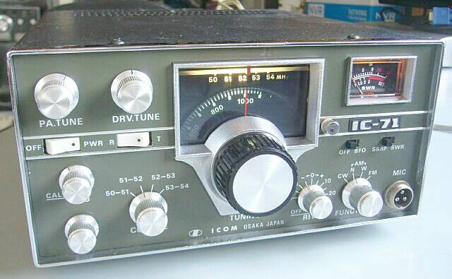
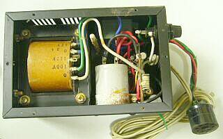
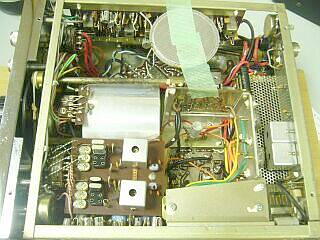
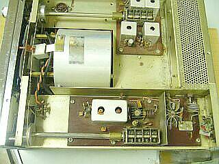
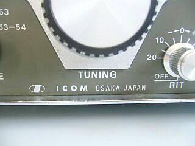
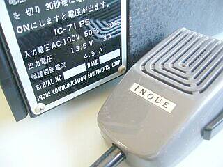
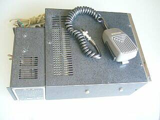
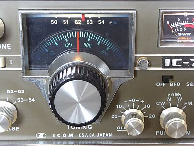
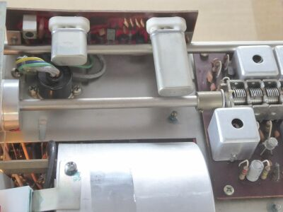
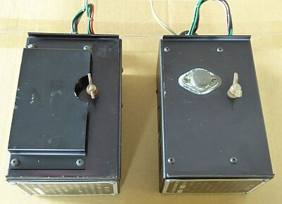

 |
表示は、５２．０００ＭＨｚです
ＣＷの運用には、ＢＦＯオプション（１００ＫＨｚマーカーと一体）が必要に |
|
本機の発売は、１９６９年末か１９７０年初頭だったと思います
ＹＡＥＳＵ ＦＴ-１０１の登場とほぼ同じです
１９７０年といえば、大阪万博開催の年でした
以下、少し時代背景ついて記します
今や、無線の世界では世界中で知らない人はいない有名ブランド ＩＣＯＭ
ＴＲＩＯ（現ＪＶＣ_ＫＥＮＷＯＯＤ）や、ＹＡＳＥＵ（八重洲無線）に比べ、後発のメーカーです（創業者が、現役会長さんです）
先行２社がＨＦ固定機スタートであったところ、井上電機製作所（現ＩＣＯＭ）は、ＶＨＦ携帯機スタートでした（一番の先行はＴＲＩＯ／春日無線・・・ＨＦ ＡＭの時代から）
スタートした時代の違いと言えばそのとおりですが、井上電機製作所（現ＩＣＯＭ）は、ソリッドステート・スタート、それも携帯機スタートです
ＦＤＦＭ-２（１４４ＭＨｚ帯１Ｗ ＦＭ）、ＦＤＡＭ-１（５０ＭＨｚ帯１Ｗ ＡＭ）というオール・ソリッドステート携帯型トランシーバーが、そのスタートとなった製品です（確か東京オリンピックの年／１９６４年）
ＶＨＦ帯においては、まだまだタクシー無線上がりのハイブリッド式（送信ファイナルは真空管を採用）・・・送信時にピーというインバータ音がする無線機が多く使われていました
クラニシや福山電機工業（いずれも、今は無きメーカー）などアマチュア無線専業メーカーでも、終段は真空管という車載トランシーバが主流でした
お話を戻して、当時の５０ＭＨｚ帯は、いわゆる入門バンドで、そのほとんどは学生さんだったように思います
日頃は、仲間とラグチュウ、Ｅスポが出ると北海道や沖縄などＤＸ ＱＳＯ、仲間と山の上に移動しては遠くを狙うなど、仲間と一緒にいろんな楽しみ方が出来たのがその大きな理由だったと思います
この市場は、ＴＲＩＯ ＴＲ-１０００（１９６５年発売）が市場をリードしていて、その後１１００、１２００とバージョンアップするのですが、対抗意識丸出しで出したのが、ＦＤＡＭ－３でした（ＦＤＡＭ-１、２では、市場を先行するＴＲ-１０００に対抗できなかった！）
そんな中で、本格的な固定機を目指して登場したのが本機です
この「型」は、その後、Ｖ～ＵＨＦ固定機に多く使われたので、何となく製品イメージが分かるという方も少なくないと思います
さて、このＩＣ－７１の特徴は、ダイヤル（ＶＦＯ）にあります
まずひとつのＶＦＯで送受信できること、今では当たり前ですが、これまでのトランシーバといえば、送受信別のダイヤル（送信機と受信機は別のものを、一体で組み込んだのがトランシーバ）で、先にキャリブレーションを取って（受信機と鳴き合わせをして）から送信というパターンが一般的でした
また高安定度というのが大きなポイントです
使い方もユニークで、大きく（早送りで）動かして、戻して細かく選局、というなかなか面白いメカニズムです
スプリアス対策と言うことでは、送受信とも、４連同調バリコンを採用し、ＲＦ段の選択度を向上させています
このメカも、送受上手く連動させると共に、ＭＨｚ台のカーソルとして活用してあります
５０ＭＨｚ帯の運用においてはＴＶＩ（加害者）
１４４ＭＨｚ帯の運用については、ポケベルによる混変調（こちらは被害者！）
この大きな問題に、優れた技術で対応したのが当時の井上電機製作所でした（ＦＥＴ、ヘリカル・レゾネータの採用など）
このＩＣ－７１発売の直後だったと思います、現在の大阪営業所の場所に新工場（本社）が建ったのは・・・
今昔
■仲間と一緒に（つるんで）遊ぶ
その昔は、当たり前だったことですが、最近は子どもも減り、ゲームを代表に「個」の遊びが中心に
なってきたようで、仲間と云々というのは良くないお話しに出てくるケースばかりが、目につきます
■ＴＶＩ
こちらも死語になりつつあるようです
ＴＸ－８８Ａ（ＡＭ：２８ＭＨｚ）でパラ発振しても、そばに置いたＴＶ画面は何ともならなかった、
というリストア挑戦者からのお話もあります
地上波放送デジタル化のメリットです
ＡｍｐＩも、オーディオ・マニアの減少でしょうか、こちらもあまり耳にしなくなりました |
|
|
例によって古いマシンですので、まずは分解して清掃からスタートです
何かが落ちて、本格的に錆び付いている部分は、どうしようもありません（軽くサンド・ペーパーをかけるくらい） |
 |
こちらが、背中に背負うタイプの純正定電圧電源（ＩＣ－７１ＰＳ）の内部です
本体との接続は、ＧＴプラグを介して行います
本体への固定は、蝶ネジ・・・トランスの右上に写っていますが、このもので固定します
取付位置を固定するためのノックが、本体背面にあります
外部電源への接続も、このＧＴプラグを介して行うことになります |
 |
本体底面
内蔵スピーカーは、コネクタ接続ではないので仮止め、そのスピーカーの陰に見えているのがＩＦ基板、中央のアルミ筐体は、ＶＦＯです
機械的にも良くできていて、なかなか安定です
水晶群は、バンド切替用で、１ＭＨｚ単位で４バンドをカバーします（現状は、標準の２バンド実装）
ＶＦＯは、１ＭＨｚをカバーします
ＶＦＯの後ろは、少し空いて変調段ファイナル、ファイナル・ユニット（パンチング・メタルの中）とＬＰＦ（四角なシールド）です
当時、ＴＶＩが少ない点も評価されていました（この地域の事情もあったのでしょうが、ＴＲＩＯ ＴＲ-５０００／５２００は、ＴＶＩが酷かった）
下に見える金属プレートの下にはＡＭ変調トランスがあります |
 |
本体上面です
上に見える４連のＶＣは、受信ＲＦ部
下に見える４連のＶＣは、送信エキサイタ部で、右のドライブ段を経由して、シールドの中、ファイナル部へと
２つのＶＣを糸掛けで連動させてあり、その途中に周波数表示（５０～５４ＭＨｚ）のカーソルが取り付けられています（ナイスなアイディアです！）
基板については、一般的なベークライトを採用
頑張ってガラスエポキシ基板を使ってくれていれば、もう少し綺麗な状態が保てたことと思います（密度が低いから、これで良いのかな？！） |
 |
 |
まだ、ロゴ戦略とまでは進んでない頃です
ＩＣＯＭ ＩＣＥ ＩＮＯＵＥ ３つが混在しています ＯＳＡＫＡ ＪＡＰＡＮ は、素敵！
ＩＥＷと表記されていた時期もありました |
 |
上から見た全体像
純正の定電圧電源オプションを背負っています
本体へ固定のための蝶ネジの頭が見えています
ハンド・マイクも、当時付属のものです
当時のことですから、マイクはハイ・インピーダンス（１０ＫΩ）です
オプションで、水晶付きＢＦＯ・１００ＫＨｚマーカーの用意がありましたが、本機には装備されていません
あとは、バンド用水晶と、車載ステーがオプションでした |
|
|
清掃後、整備を開始
破損部品は無く（ＰＬも切れていない）、調整（機械的／電気的）のみで対応を終えました
純正電源を使用（ＡＣ１００Ｖ運用）、５０Ω負荷
送信出力 １１Ｗ程度（ＡＭ／ＦＭ共に）
受信感度 ＡＭ：０ｄｂμＶ入力 ３０％ １ＫＨｚ変調 S/N１３ｄｂ程度（Ｗ） １５ｄｂ程度（Ｎ）
ＦＭ：０ｄｂμＶ入力 デビエーション５ＫＨｚ １ＫＨｚ変調 S/N２３ｄｂ程度
Ｓ９表示 おおよそ１３ｄｂμＶ入力時
多分ですが、新品時スペックに近いものと思います |
| 20１6．09 |
| ２台目を入手、こちらは全４バンドクリスタル、マーカ/ＢＦＯ基板を内蔵です（フル・オプション内蔵） |
 |
本機によくある、ＰＬの熱による日焼け
表示「５２」ＭＨｚの部分によくある日焼けはありません
通電時間が短いのか、ダイヤル表示、ＰＬの位置関係・構造が改善されたのかは？？？です |
 |
オプションである１００KHｚマーカー／ＢＦＯ基板搭載です
フロントから見て、左サイドに縦に取り付け、です。
接続は、MT７Pプラグを差し込むだけです（４５５KHｚクリスタルの下に見えています）
ＣＷ受信時の様子は、最後に記します |
 |
２台目に付属のＩＣ-７１ＰＳは左側です
定電圧電源Trにカバーがかかっています
１台目についていた状態であれば、コレクタがむき出しですので、どこかとショートなど事故が考えられますので、これは安全策でしょう |
|
受信ＲＦ／ＩＦ部、送信ドライブ・ファイナル段の調整を行いました、その後に
５２．０ＭＨｚにて計測してみました
（ ＩＣ-７１ＰＳ使用） |
電気的性能は２台に大差ありません |
| |
送信 |
出力 １０Ｗ強 |
消費電流 ＡＭ時：３ＡＭａｘ ＦＭ時：約２Ａ |
|
受信 |
ＡＭ Ｗｉｄｅ ３０％変調 |
1．０μＶ入力 Ｓ／Ｎ １５ｄｂ |
|
|
|
|
０．５μＶ入力 Ｓ／Ｎ ８ｄｂ |
| |
|
ＡＭ Ｎａｒｒｏｗ |
1．０μＶ入力 Ｓ／Ｎ １７ｄｂ |
| |
|
|
|
０．５μＶ入力 Ｓ／Ｎ １０ｄｂ |
| |
|
ＦＭ ±７．５ＫＨｚ変調 |
1．０μＶ入力 Ｓ／Ｎ ２３ｄｂ |
| |
|
|
|
０．５μＶ入力 Ｓ／Ｎ ２０ｄｂ |
| |
|
ＣＷ 信号のＯＮ／ＯＦＦ |
０．１５μＶ入力 Ｓ／Ｎ １０ｄｂ |
説明書にある仕様を見ても、受信感度についてはＳ／Ｎが書かれているだけです
上記の結果から想像ですが、１．０μＶ入力でのＳ／Ｎが記されているものだろうと思われます
余談ながら、ＢＦＯをＯＮにするとＳメーターが振れます
ＩＦにＢＦＯ信号が回り込んでいる結果です（４５５ＫＨｚ／中心周波数のＢＦＯですので、この点は致し方ありませんね）
ＣＷの受信そのものに影響を与えるものではありません、上記の通り十分な感度が取れています |